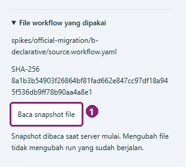

File dibaca saat startup, graph dibangun untuk request
- File YAMLLangkah, kondisi, dan agent referenceBaca snapshot saat startup
- Python + WorkflowFactoryPasangkan agent dan bangun graphJalankan pertanyaan
- Foundry dan tool MCPRouter memilih MCP; specialist membaca work orderKembalikan bukti
- UIFakta, sumber, dan activity yang teramati
Lihat YAML yang memang dibaca oleh loader
File source.workflow.yaml memakai action seperti SetVariable, InvokeAzureAgent, dan ConditionGroup. WorkflowFile.create() menyerahkan teks dan agent bindings ke WorkflowFactory. Ini bukan YAML tampilan hasil mapping di targets/maf dan bukan graph code-first.
YAML · Simpan kondisi
- id: route_mcp
condition: =Local.RouterDecision.route = "mcp"Python · Muat definisi
return factory.create_workflow_from_yaml(
self.text, base_path=self.path.parent
)Potongan di kanan hanya memuat teks YAML. Untuk melihat kondisi MCP yang ditulis ulang menjadi Case dalam Python, buka penjelajah YAML ↔ Python code-first.
Kenapa file yang diedit bisa ditolak?
UI demo memeriksa SHA-256 file terhadap baseline agar perbandingan memakai source yang sama. Itu guard demo, bukan syarat umum WorkflowFactory. Untuk versi baru, review kompatibilitas action, binding, dan baseline; jangan mengubah hash hanya supaya loader menerima file.
Pakai dependency terpisah dari code-first
Jalankan dari root repository di PowerShell dengan Python 3.13. Pasang dependency yang dipin untuk UI declarative pada venv sendiri; jangan upgrade venv baseline dengan paket ini.
py -3.13 -m venv .venv\declarative
.\.venv\declarative\Scripts\python.exe -m pip install -r .\spikes\declarative_ui\requirements.lock.txt
.\.venv\declarative\Scripts\python.exe -m pip check
.\.venv\declarative\Scripts\python.exe -m pytest -c .\spikes\declarative_ui\pytest.ini .\spikes\declarative_ui\tests -qTes loader memakai fixture, tanpa run baru di Foundry. Jika Power Fx gagal dimuat, cek prasyarat runtime Python/.NET yang sesuai paket sebelum mengubah versi SDK.
Untuk live: siapkan sandbox dan koneksi agent, lalu cek binding nama dan versi. Endpoint Foundry dapat mengikuti profil, tetapi launcher demo masih mengikat subscription Azure CLI pada konstanta snapshot. Untuk subscription lain, review binding dan credential scope pada salinan sendiri sebelum uji; profil saja belum membuat eksperimen ini portabel penuh.
Operator: mulai UI setelah binding dan akses sesuai
.\.venv\declarative\Scripts\python.exe -X utf8 -m spikes.declarative_ui `
--workflow .\spikes\official-migration\b-declarative\source.workflow.yaml --port 8767Buka http://127.0.0.1:8767/ setelah /health menampilkan local-maf-declarative-ui. Restart proses jika ingin membaca snapshot lain yang telah disetujui; perubahan di disk tidak mengubah run yang sudah berjalan.
Praktik: buka snapshot sebelum mengirim pertanyaan
- TRK001UI mengirim pertanyaan asliMulai graph
- Graph dari YAMLSnapshot + binding agentJalankan kondisi
- Router dan specialistConditionGroup memilih MCPKembalikan bukti
- Hasil di UIPeriksa WO001, sumber, dan activity


- Pada UI yang berjalan, pilih Baca snapshot file. Periksa path, hash, dan branch
mcppada YAML yang dimuat. - Isi
Show work orders for equipment TRK001.lalu jalankan sekali di sandbox berizin. Router mengembalikanmcp; kondisi pada YAML memilih specialist. Specialist yang meminta data MCP. - Cek Jawaban dan sumber serta activity. Harapkan
mcp / success,WO001untukTRK001, danurn:kppdemo:maintenance/TRK001.
Video memperlihatkan snapshot YAML dan hasil run yang sudah direkam. Menontonnya tidak mengirim request ke Foundry.
Pastikan yang diuji benar-benar file yang dimuat
Dependency berbeda, hash gagal, atau data tidak cocok?
Untuk dependency, pakai venv declarative dan lock yang sesuai. Untuk hash, cek path dan byte file sumber yang telah disetujui. Jika panggilan cloud gagal, cek scope identitas, agent reference, izin, dan tool evidence. Jangan merendahkan error menjadi hasil sukses.
Bandingkan fakta dan sumber dengan jalur code-first; kesamaan jawaban tidak berarti graph yang dipakai sama. Rujuk runtime declarative untuk startup, binding, dan eksekusi.
Hentikan UI setelah run selesai
.\.venv\declarative\Scripts\python.exe -X utf8 -m spikes.declarative_ui --port 8767 --stopPerintah ini hanya menutup UI lokal. Biaya yang perlu dihitung datang dari host dan layanan yang dipanggil, bukan dari format YAML-nya. Lihat contoh biaya dan batasnya.